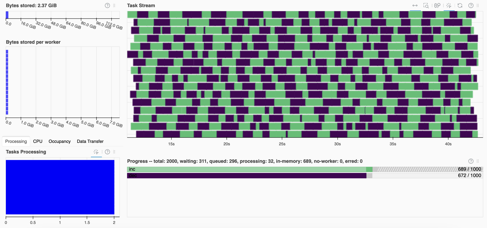

# import needed modules
import time, random
# define our functions
def inc(x):
time.sleep(random.random())
return x + 1
def dec(x):
time.sleep(random.random())
return x - 1
def add(x, y):
time.sleep(random.random())
return x + ySimple dask example – Gateway
📘 Learning Objectives
- Set up a Dask Gateway cluster
- Learn about the constraints for the Gateway clusters
Overview
In this notebook, I set up a Dask Gateway cluster. This is a cluster set up on new pods (new virtual machines). I can set up the size and number of the new pods. I can start my notebook with a small pod (4CPU, 2 Gb) and run my tasks on larger pods (many CPU + RAM) or a lot of little pods (1 CPU + less RAM), which is the default. The nmfs-openscapes Jupyter Hub is set-up with Dask Gateway to allow this; it is a common but not a default feature of Jupyter Hubs.
| Feature | LocalCluster |
DaskGateway |
|---|---|---|
| Runs in your notebook? | ✅ Yes | ❌ No (runs in new pods) |
| Uses multiple pods? | ❌ No | ✅ Yes (scheduler + workers) |
| Scales beyond pod? | ❌ No | ✅ Yes |
| Can use files in /home | ✅ Yes | ❌ No |
Important note on the image
The new pods need to use the same image as the one you started the notebook. Using a small an image as possible will reduce the set-up time since each new pod need to pull down the image into the cluster pod. For this tutorial, I am using
openscapes/python:07980b9
using “Py - NASA Openscapes Python” in the image dropdown.
Important note on file access
Since the Dask Gateway pods (scheduler + workers) are separate from your notebook pod, they do not have access to files on local paths like /home.
If your code references a file like ds = xr.open_dataset("file.json"), it will fail when ds["sst"].mean().compute() is called — because the workers can’t see that file (which is in \home). ds is lazy and it needs the information in “file.json” to know where the underlying data files are (that it needs to read).
The error will say “FileNotFoundError” and “RuntimeError: Error during deserialization of the task graph. This frequently occurs if the Scheduler and Client have different environments.”
Set up the functions
A task that takes a long time
20 of these tasks takes about 6 seconds on our 4 CPU pod run in a parallel way with a local Dask cluster. We are going to run 1000 of the tasks, which would take 5-10 minutes.
%%time
# a sequential example with no parallelization
results = []
for x in range(20):
result = inc(x)
result = dec(result)
results.append(result)
print(results)[0, 1, 2, 3, 4, 5, 6, 7, 8, 9, 10, 11, 12, 13, 14, 15, 16, 17, 18, 19]
CPU times: user 1.21 s, sys: 78.5 ms, total: 1.29 s
Wall time: 18.3 sSet up a Dask Gateway cluster
from dask_gateway import Gateway
gateway = Gateway() # instantiate Dask gateway
options = gateway.cluster_options()
cluster = gateway.new_cluster(options)
cluster.adapt(minimum=4, maximum=30)Look at the cluster options. The r5.4xlarge instance is 16 vCPUs, 128.0 GiB.
# look at the cluster options
optionsWe can open the cluster in the Dask dashboard by clicking on the url.
# look at the cluster
clusterOpen a client run tasks and then close the client. Setting up a Dask Gateway cluster takes awhile (getting those images into the pods). The overhead only makes sense if you are doing big tasks. Also smaller images can speed up set up since you can pull those faster into the pods. The work took 2 minutes and most of that was the set-up time.
%%time
# Set up a client for work
client = cluster.get_client()
results = []
for x in range(1000):
result = client.submit(inc, x)
result = client.submit(dec, result)
results.append(result)
results = client.gather(results)
print(results)
client.close()[0, 1, 2, 3, 4, 5, 6, 7, 8, 9, 10, 11, 12, 13, 14, 15, 16, 17, 18, 19, 20, 21, 22, 23, 24, 25, 26, 27, 28, 29, 30, 31, 32, 33, 34, 35, 36, 37, 38, 39, 40, 41, 42, 43, 44, 45, 46, 47, 48, 49, 50, 51, 52, 53, 54, 55, 56, 57, 58, 59, 60, 61, 62, 63, 64, 65, 66, 67, 68, 69, 70, 71, 72, 73, 74, 75, 76, 77, 78, 79, 80, 81, 82, 83, 84, 85, 86, 87, 88, 89, 90, 91, 92, 93, 94, 95, 96, 97, 98, 99, 100, 101, 102, 103, 104, 105, 106, 107, 108, 109, 110, 111, 112, 113, 114, 115, 116, 117, 118, 119, 120, 121, 122, 123, 124, 125, 126, 127, 128, 129, 130, 131, 132, 133, 134, 135, 136, 137, 138, 139, 140, 141, 142, 143, 144, 145, 146, 147, 148, 149, 150, 151, 152, 153, 154, 155, 156, 157, 158, 159, 160, 161, 162, 163, 164, 165, 166, 167, 168, 169, 170, 171, 172, 173, 174, 175, 176, 177, 178, 179, 180, 181, 182, 183, 184, 185, 186, 187, 188, 189, 190, 191, 192, 193, 194, 195, 196, 197, 198, 199, 200, 201, 202, 203, 204, 205, 206, 207, 208, 209, 210, 211, 212, 213, 214, 215, 216, 217, 218, 219, 220, 221, 222, 223, 224, 225, 226, 227, 228, 229, 230, 231, 232, 233, 234, 235, 236, 237, 238, 239, 240, 241, 242, 243, 244, 245, 246, 247, 248, 249, 250, 251, 252, 253, 254, 255, 256, 257, 258, 259, 260, 261, 262, 263, 264, 265, 266, 267, 268, 269, 270, 271, 272, 273, 274, 275, 276, 277, 278, 279, 280, 281, 282, 283, 284, 285, 286, 287, 288, 289, 290, 291, 292, 293, 294, 295, 296, 297, 298, 299, 300, 301, 302, 303, 304, 305, 306, 307, 308, 309, 310, 311, 312, 313, 314, 315, 316, 317, 318, 319, 320, 321, 322, 323, 324, 325, 326, 327, 328, 329, 330, 331, 332, 333, 334, 335, 336, 337, 338, 339, 340, 341, 342, 343, 344, 345, 346, 347, 348, 349, 350, 351, 352, 353, 354, 355, 356, 357, 358, 359, 360, 361, 362, 363, 364, 365, 366, 367, 368, 369, 370, 371, 372, 373, 374, 375, 376, 377, 378, 379, 380, 381, 382, 383, 384, 385, 386, 387, 388, 389, 390, 391, 392, 393, 394, 395, 396, 397, 398, 399, 400, 401, 402, 403, 404, 405, 406, 407, 408, 409, 410, 411, 412, 413, 414, 415, 416, 417, 418, 419, 420, 421, 422, 423, 424, 425, 426, 427, 428, 429, 430, 431, 432, 433, 434, 435, 436, 437, 438, 439, 440, 441, 442, 443, 444, 445, 446, 447, 448, 449, 450, 451, 452, 453, 454, 455, 456, 457, 458, 459, 460, 461, 462, 463, 464, 465, 466, 467, 468, 469, 470, 471, 472, 473, 474, 475, 476, 477, 478, 479, 480, 481, 482, 483, 484, 485, 486, 487, 488, 489, 490, 491, 492, 493, 494, 495, 496, 497, 498, 499, 500, 501, 502, 503, 504, 505, 506, 507, 508, 509, 510, 511, 512, 513, 514, 515, 516, 517, 518, 519, 520, 521, 522, 523, 524, 525, 526, 527, 528, 529, 530, 531, 532, 533, 534, 535, 536, 537, 538, 539, 540, 541, 542, 543, 544, 545, 546, 547, 548, 549, 550, 551, 552, 553, 554, 555, 556, 557, 558, 559, 560, 561, 562, 563, 564, 565, 566, 567, 568, 569, 570, 571, 572, 573, 574, 575, 576, 577, 578, 579, 580, 581, 582, 583, 584, 585, 586, 587, 588, 589, 590, 591, 592, 593, 594, 595, 596, 597, 598, 599, 600, 601, 602, 603, 604, 605, 606, 607, 608, 609, 610, 611, 612, 613, 614, 615, 616, 617, 618, 619, 620, 621, 622, 623, 624, 625, 626, 627, 628, 629, 630, 631, 632, 633, 634, 635, 636, 637, 638, 639, 640, 641, 642, 643, 644, 645, 646, 647, 648, 649, 650, 651, 652, 653, 654, 655, 656, 657, 658, 659, 660, 661, 662, 663, 664, 665, 666, 667, 668, 669, 670, 671, 672, 673, 674, 675, 676, 677, 678, 679, 680, 681, 682, 683, 684, 685, 686, 687, 688, 689, 690, 691, 692, 693, 694, 695, 696, 697, 698, 699, 700, 701, 702, 703, 704, 705, 706, 707, 708, 709, 710, 711, 712, 713, 714, 715, 716, 717, 718, 719, 720, 721, 722, 723, 724, 725, 726, 727, 728, 729, 730, 731, 732, 733, 734, 735, 736, 737, 738, 739, 740, 741, 742, 743, 744, 745, 746, 747, 748, 749, 750, 751, 752, 753, 754, 755, 756, 757, 758, 759, 760, 761, 762, 763, 764, 765, 766, 767, 768, 769, 770, 771, 772, 773, 774, 775, 776, 777, 778, 779, 780, 781, 782, 783, 784, 785, 786, 787, 788, 789, 790, 791, 792, 793, 794, 795, 796, 797, 798, 799, 800, 801, 802, 803, 804, 805, 806, 807, 808, 809, 810, 811, 812, 813, 814, 815, 816, 817, 818, 819, 820, 821, 822, 823, 824, 825, 826, 827, 828, 829, 830, 831, 832, 833, 834, 835, 836, 837, 838, 839, 840, 841, 842, 843, 844, 845, 846, 847, 848, 849, 850, 851, 852, 853, 854, 855, 856, 857, 858, 859, 860, 861, 862, 863, 864, 865, 866, 867, 868, 869, 870, 871, 872, 873, 874, 875, 876, 877, 878, 879, 880, 881, 882, 883, 884, 885, 886, 887, 888, 889, 890, 891, 892, 893, 894, 895, 896, 897, 898, 899, 900, 901, 902, 903, 904, 905, 906, 907, 908, 909, 910, 911, 912, 913, 914, 915, 916, 917, 918, 919, 920, 921, 922, 923, 924, 925, 926, 927, 928, 929, 930, 931, 932, 933, 934, 935, 936, 937, 938, 939, 940, 941, 942, 943, 944, 945, 946, 947, 948, 949, 950, 951, 952, 953, 954, 955, 956, 957, 958, 959, 960, 961, 962, 963, 964, 965, 966, 967, 968, 969, 970, 971, 972, 973, 974, 975, 976, 977, 978, 979, 980, 981, 982, 983, 984, 985, 986, 987, 988, 989, 990, 991, 992, 993, 994, 995, 996, 997, 998, 999]
CPU times: user 2.05 s, sys: 154 ms, total: 2.21 s
Wall time: 2min 41s# When we are done we can close our dask cluster
cluster.close()Summary
Dask set up 16 workers. We gave each worker 1 CPU and r5.4xlarge instances (the default node size our our Jupyter Hub) is 16 vCPUs, 128.0 GiB.

This notebook used the default worker size but we can change the workers as follows.
options = gateway.cluster_options()
options.worker_cores = 2
options.worker_memory = "8GiB"